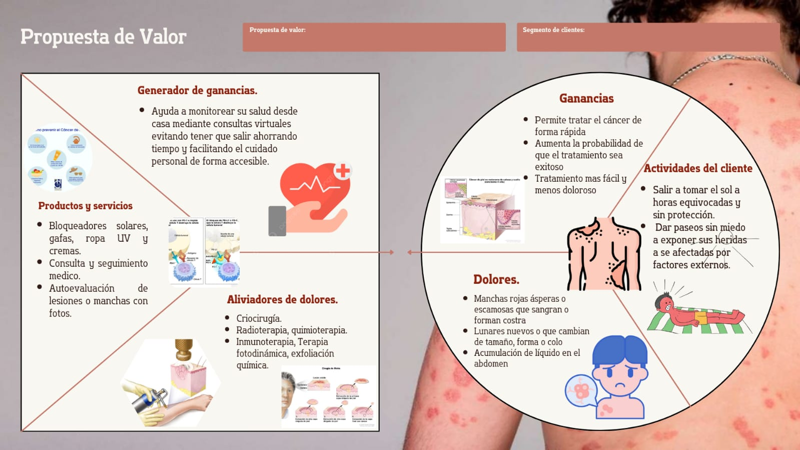

¿Qué es el Cáncer de Piel?
El cáncer de piel es el crecimiento anormal de las células de la piel. Es uno de los tipos de cáncer más comunes, y se produce cuando las células de la piel se multiplican de manera descontrolada.
¿Por qué ocurre el Cáncer de Piel?
La principal causa del cáncer de piel es la exposición excesiva a los rayos UV del sol o las camas de bronceado, lo que daña el ADN de las células de la piel. Otros factores, como antecedentes familiares, edad y tipo de piel, también pueden influir.
Consejos para prevenir el cáncer de piel
Pasos para cuidar tu piel y prevenir el cáncer de piel:
- Usa protector solar diariamente.
- Evita exponerte al sol en horas de alta intensidad.
- Revisa tus lunares regularmente.
Contáctanos
Si necesitas más información, no dudes en escribirnos.
Ir a la página de contacto